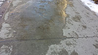

 Winter can be a beautiful time of year in Michigan. The skies are clean and crisp and sunlight glitters off fields of snow. However, the roads can be dangerous for driving, and the sidewalks can be a dangerous place to walk.
Our neighborhood sidewalks are often covered with ice.
Some of the ice can be easy to see and walk around, but some of the ice is thin and it is impossible to know that it is there (until you suddenly find yourself hurtling to the ground).
The ice is especially dangerous when walking downhill.
We have had several bad falls in our family, resulting in lots of injuries, including a broken shoulder and a broken leg. So, we are now very good at taking precautionary measures.
Ice is not nice. Ice is not nice. Ice is not nice. Ice is not nice. Ice is not nice. Ice is not nice. Ice is not nice. Ice is not nice. Ice is not nice. Ice is not nice. Ice is not nice. Ice is not nice. Ice is not nice. Ice is not nice. Ice is not nice. Ice is not nice. Ice is not nice. Ice is not nice. Ice is not nice. Ice is not nice. Ice and snow - oh my! Ice and snow - oh my! Ice and snow - oh my! Ice and snow - oh my! Ice and snow - oh my! Ice and snow - oh my! Ice and snow - oh my! Ice and snow - oh my! Ice and snow - oh my! Ice and snow - oh my! Ice and snow - oh my! Ice and snow - oh my! Ice and snow - oh my! Ice and snow - oh my! Ice and snow - oh my! Ice and snow - oh my! Ice and snow - oh my! Ice and snow - oh my! Ice is not nice. Ice is not nice. Ice is not nice. Ice is not nice. Ice is not nice. Ice is not nice. Ice is not nice. Ice is not nice. Ice is not nice. Ice is not nice. Ice is not nice. Ice is not nice. Ice is not nice. Ice is not nice. Ice is not nice. Ice is not nice. Ice is not nice. Ice is not nice. Ice is not nice. Ice is not nice. Ice and snow - oh my! Ice and snow - oh my! Ice and snow - oh my! Ice and snow - oh my! Ice and snow - oh my! Ice and snow - oh my! Ice and snow - oh my! Ice and snow - oh my! Ice and snow - oh my! Ice and snow - oh my! Ice and snow - oh my! Ice and snow - oh my! Ice and snow - oh my! Ice and snow - oh my! Ice and snow - oh my! Ice and snow - oh my! Ice and snow - oh my! Ice and snow - oh my!